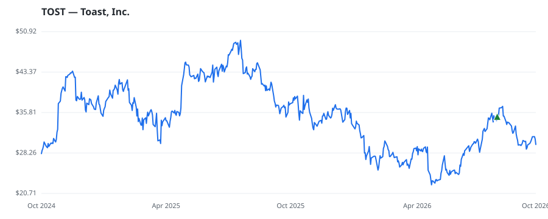

bullish · bearish · n/a — dots: price>SMA10 · SMA10>SMA50 · SMA50>SMA200 · up>down volume (20d)
Software & Services · large cap
Members who bought TOST earned a dollar-weighted -3.7% from their disclosure dates, versus -4.6% for the S&P 500 over the same holding windows (+0.9% alpha).

▲ green = a disclosed purchase · ▼ red = a disclosed sale (plotted on disclosure date)
Toast Inc is a cloud-based, all-in-one digital technology platform purpose-built for the restaurant community. The company provides a comprehensive platform of software-as-a-service (SaaS) products and financial technology solutions, including integrated payment processing, restaurant-grade hardware, and a broad ecosystem of third-party partners. It serves as a restaurant operating system, connecting front of house and back of house operations across service models such as dine-in, takeout, and delivery. It operates through one reportable segment consisting of its SaaS products, financial tech SERVICES-COMPUTER PROCESSING & DATA PREPARATION · website
| Revenue | $6.2B | Net income | $342.0M |
|---|---|---|---|
| Operating income | $292.0M | Diluted EPS | $0.56 |
| Assets | $3.1B | Equity | $2.1B |
| Member | Chamber | Out-performer | Disclosed buys $ | Return on buys |
|---|---|---|---|---|
| Thomas H. Kean | house | — | $8K | -3.7% |
Disclosed $ figures are bracket midpoints — filings report ranges (e.g. $1,001–$15,000), not exact amounts.
This name produced 0.0% of the ranked funds’ total alpha.
🛒 Newly buying: Estuary Capital Management LP (+35%, 1.9% of book) · 9823 Capital, L.P. (+20%, 0.2% of book) · Putney Financial Group LLC (+2%, 0.1% of book) · VEGA INVESTMENT SOLUTIONS (+12%, 0.1% of book)
| Fund | Fund alpha vs SPY | Position | % of book |
|---|---|---|---|
| Estuary Capital Management LP | +35% | $16M | 1.9% |
| TERRIL BROTHERS, INC. | +11% | $12M | 2.9% |
| Mayar Capital Ltd. | -16% | $7M | 9.4% |
| Generali Investments Towarzystwo Funduszy Inwestycyjnych | +8% | $3M | 1.2% |
| VEGA INVESTMENT SOLUTIONS | +12% | $0M | 0.1% |
| SEAMOUNT FINANCIAL GROUP INC | -2% | $0M | 0.1% |
| 9823 Capital, L.P. | +20% | $0M | 0.2% |
| Jupiter Wealth Management LLC | +1% | $0M | 0.1% |
| Putney Financial Group LLC | +2% | $0M | 0.1% |
| Finley Financial, LLC | -2% | $0M | 0.0% |
Hedge data: SEC EDGAR 13F · ranked funds beat SPY in >50% of their quarters · fund alpha = mirror-portfolio return minus SPY.